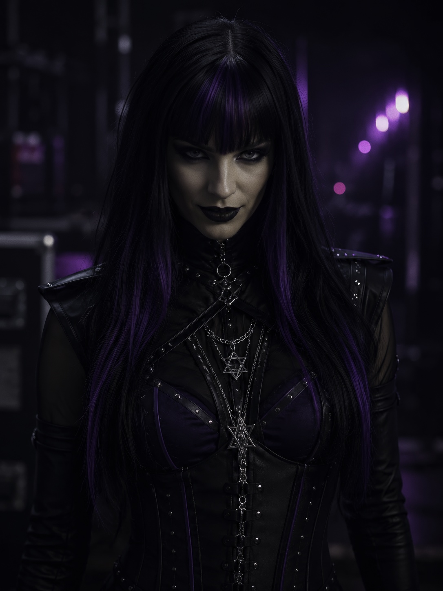
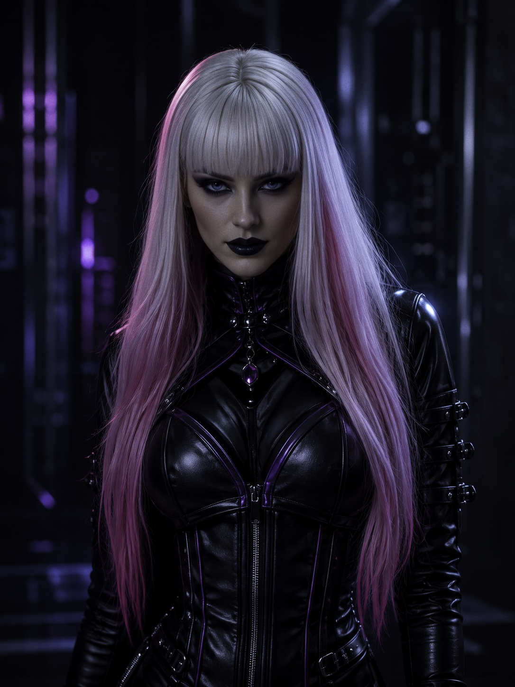
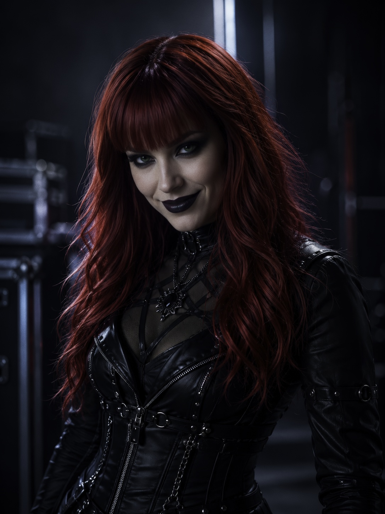

Callizto Lyhdan
Lead vocalist / frontwoman
Long black hair with deep purple highlights, ice-blue eyes, and a gothic presence shaped around control, sorrow, and command.
The fictional band
The band members are fictional performers inside the Callizto Dark Symphony universe, designed for recurring visual storytelling.

Lead vocalist / frontwoman
Long black hair with deep purple highlights, ice-blue eyes, and a gothic presence shaped around control, sorrow, and command.

Guitar / backup vocals
Platinum-white hair with pink highlights and cyberpunk elegance, carrying melody through precision, voltage, and grace.

Drums / backup vocals
Long bright red hair, green eyes, and ritual intensity: the pulse beneath the project's darker ceremonial edge.